Explore Bruges
A Brief History
Bruges channelled Flemish cloth exports through its Zwin estuary in the thirteenth and fourteenth centuries, building belfries, hospitals, and the Béguinage that still structure the historic core. Hanseatic and Italian merchants stored goods in canalside warehouses before silting reduced the port's reach. Revived tourism and lace workshops followed nineteenth-century rediscovery of its medieval streetscape, leaving a city where civic guilds and waterways once linked Flanders to the North Sea.
Attractions Map
Top Sights & Activities
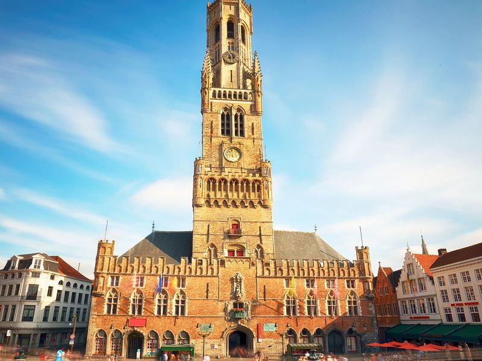
Belfry of Bruges
The Belfry of Bruges is a medieval bell tower that stands at an impressive 83 meters high, making it a striking feature in the city's skyline. It is a cherished landmark with a treasure chamber and houses a 47-belled carillon. Climbing its 366 steps rewards travellers with panoramic views of Bruges from the top. The unique chimes of the carillon add to the experience as you ascend.
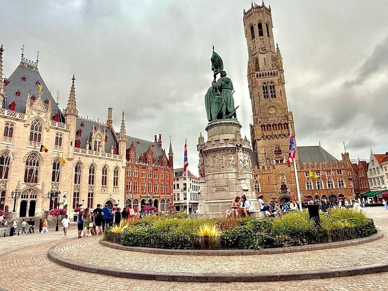
Market Square
Market Square, In Bruges, is a bustling traffic-free square that underwent renovations in 1996. The square is home to the impressive 13th-century Belfry and surrounded by other captivating buildings such as the Provincial Palace and a statue honoring heroes from the Battle of the Golden Spurs. travellers can also enjoy delicious fried potatoes from nearby vendors.
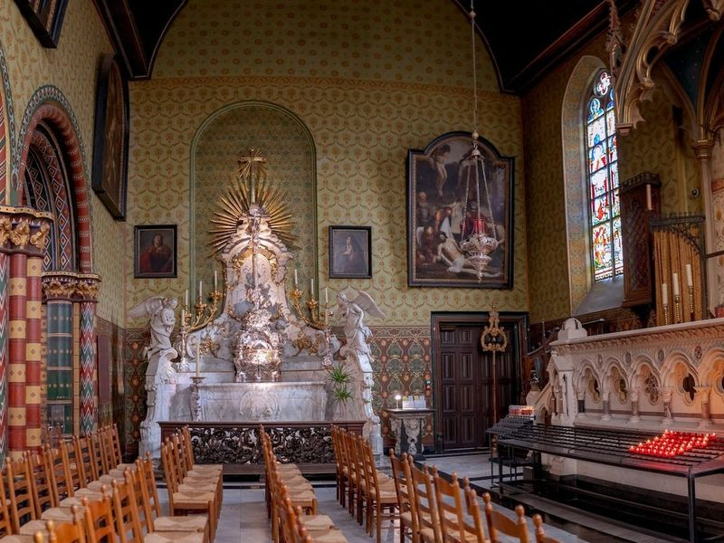
Basilica of the Holy Blood
The Basilica of the Holy Blood, located in Bruges, is a renowned minor basilica that is famous for housing a phial believed to contain a cloth stained with Jesus Christ's blood. This 12th-century Romanesque basilica is situated in the Burg, an architectural center of Bruges. The basilica features an ornate reliquary and a double-spired chapel, making it well-known Christian places of worship in the city.
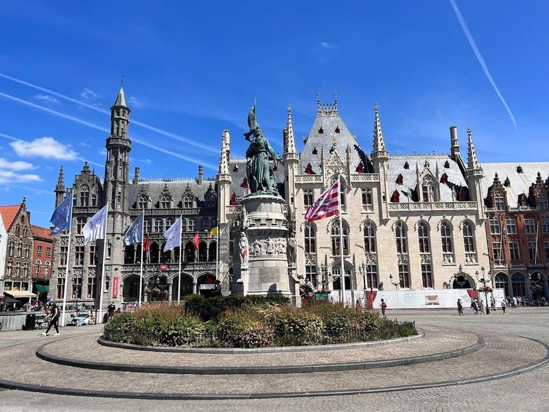
De Burg
De Burg, also known as the Burg Square, is a historic cobblestone plaza in Bruges surrounded by grand Gothic buildings, stores, bars, and eateries. It served as the administrative center of medieval Bruges and showcases Gothic architecture that reflects the city's magnificence and wealth during that period. The square is home to significant landmarks such as Belgium's oldest town hall, the Stadhuis, which has retained its original 1376 design.
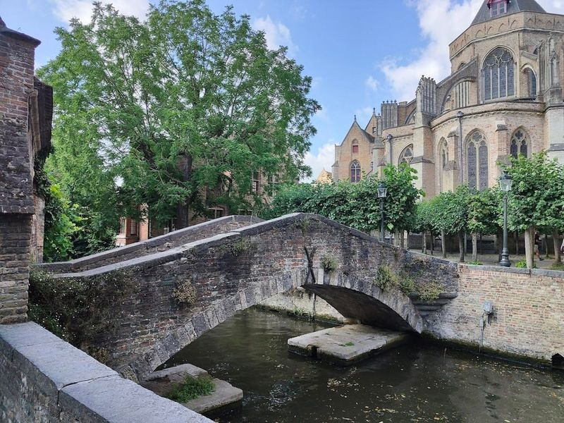
Boniface Bridge
Boniface Bridge (Bonifaciusbrug) is a charming early-20th-century pedestrian bridge that offers romantic views of the canal and the town. Located near the Church of the Blessed Virgin Mary, it is one of Bruges' most photographed spots. The area around the bridge, including Arents Courtyard, provides picturesque scenes with its historic buildings and horse-drawn carriages.
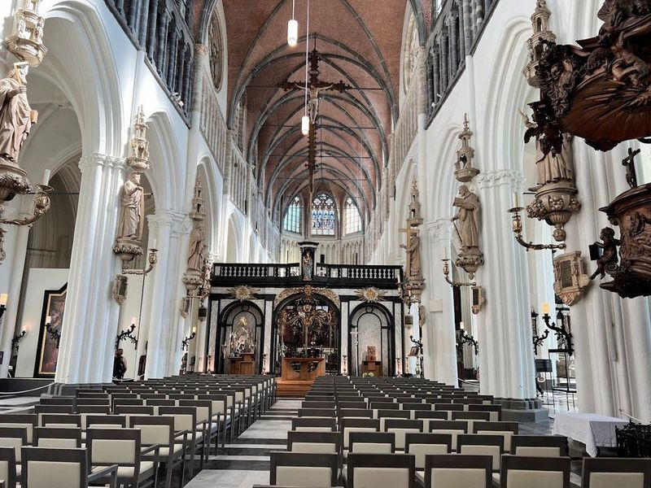
Church of Our Lady
The Church of Our Lady, located in Bruges, Belgium, is a example of Gothic architecture with a soaring tower that reaches 115.6 meters high. Dating back to the 13th century, it holds great historical and artistic significance. The church is home to several notable art pieces, including Michelangelo's 'Madonna and Child,' a rare work that left Italy during the artist's lifetime.
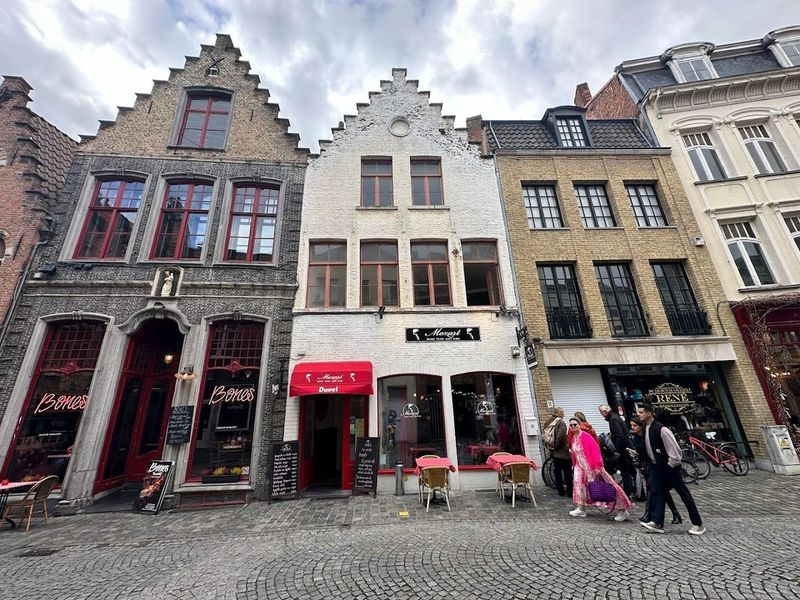
Rosary Quay
Rosary Quay in Bruges is a picturesque spot that captures the historic charm of the city. Named after the place where nuns used to sell rosaries, it offers views of canals, bridges, weeping willow trees, and medieval architecture. travellers can stroll through a passageway under the Palace of the Liberty of Bruges to reach the canal and embark on boat tours.
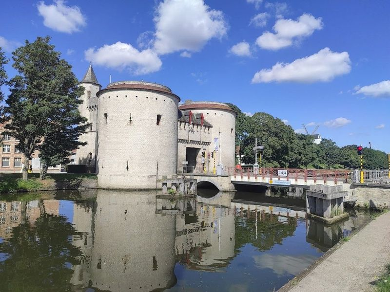
Kruispoort gate
Kruispoort gate is one of the four remaining medieval city gates in Bruges, Belgium. Dating back to the early 15th century, it has been well-preserved through various renovations. This historic structure was a vital entry point and played a significant role in the city's defense system. The gate is situated along a canal that once served as both a moat and a connection to the sea.
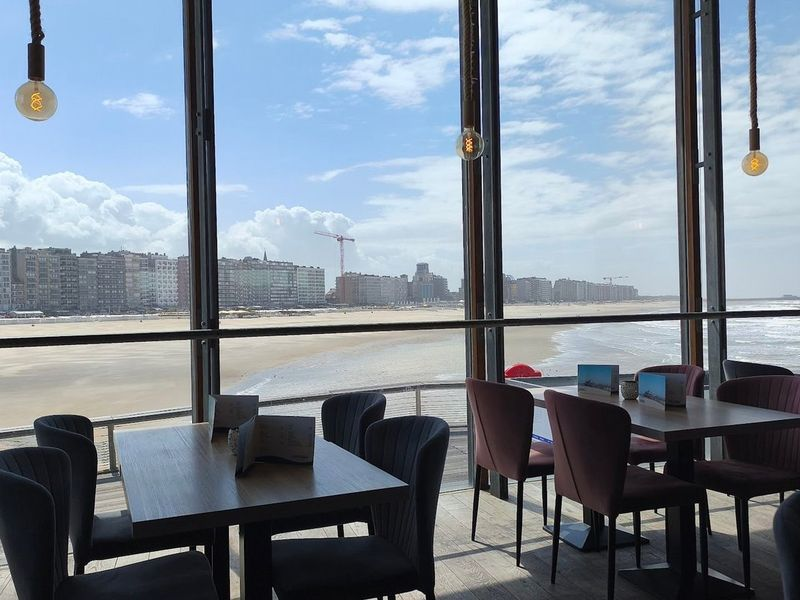
Belgium Pier
Nestled along the Belgian coastline, Belgium Pier stands as a testament to both history and modernity. Originally constructed in 1933, this pier features a striking circular Art Deco structure that houses a delightful brasserie and versatile events space. travellers can indulge in mouthwatering dishes while soaking up sea views, making it an ideal spot for food lovers.
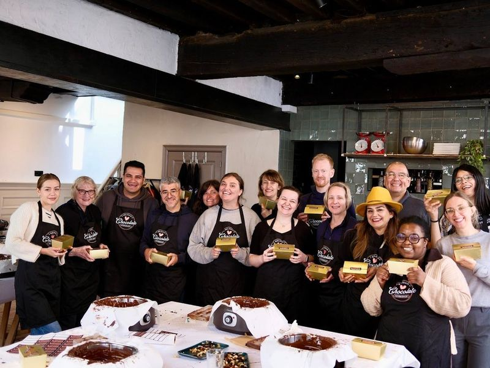
Belgian Chocolate Workshop in Bruges
The Belgian Chocolate Workshop in Bruges offers an affordable and enjoyable experience where learn to make your own delicious Belgian chocolates. The workshop provides a fun activity for people of all ages, as evidenced by the positive experience of a 70-year-old couple who found it to be the thing they had tried. Participants get to create their own chocolates under the guidance of an engaging instructor, making it a perfect souvenir to take home from your trip.
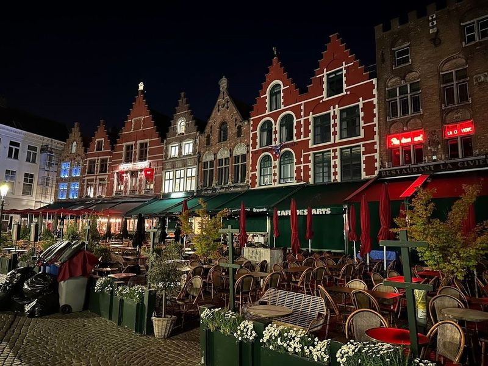
Jan van Eyckplein
Jan van Eyckplein, also known as Jan Van Eyck Square, is a charming medieval square in Bruges named after the famous Flemish oil painter Jan Van Eyck. The square features a statue of the artist and occasionally hosts art displays, such as the impressive 5-ton whale sculpture made from recycled plastic waste. With its quaint and picturesque surroundings, it's an ideal spot for leisurely strolls and capturing beautiful photos.
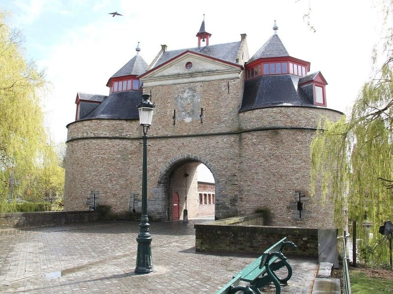
Ezelpoort
Ezelpoort is one of the four remaining medieval city gates in Bruges, each strategically positioned to control trade and traffic. These gates, including Ezelpoort, not only served as defensive structures but also regulated the flow of goods in and out of the city. The grand scale of these gates offers a glimpse into the imposing city walls that once encircled Bruges. travellers can admire the picturesque surroundings, with serene waters where swans gracefully glide despite mild weather.
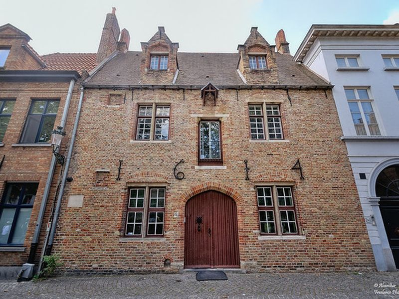
Huisbrouwerij De Halve Maan
A historic family-run brewery offering tours and tastings of their renowned Brugse Zot beer. The site is catalogued as a tourist attraction. Huisbrouwerij De Halve Maan is listed among principal sites for Bruges within Belgium. Municipal and regional heritage listings document its place in the historic centre and travellers routes through Bruges.
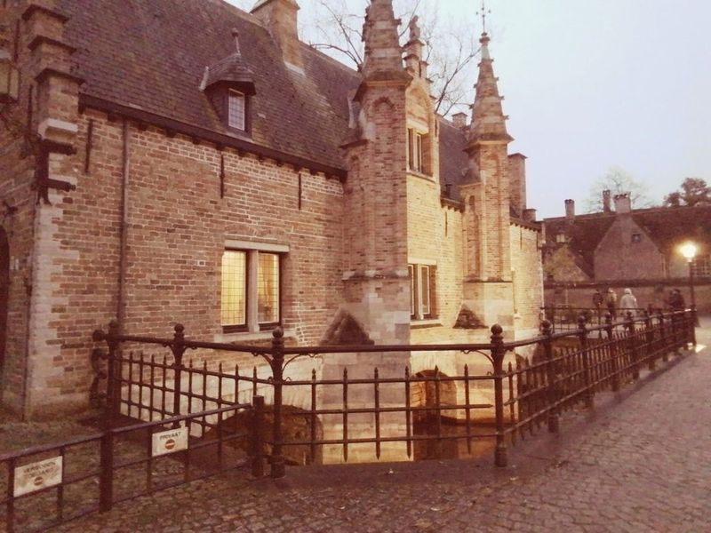
Sashuis
Sashuis, a charming gabled building dating back to 1519, is situated at the northern end of Minnewater lake near Begijnhof/Beguinage. It serves as the central information center for Handmade in Bruges, a project that showcases the city's skilled craftworkers and artisan producers. travellers can obtain a free leaflet or app for a guided tour to explore these talented individuals. The location offers picturesque scenery and leisurely strolls around the area.
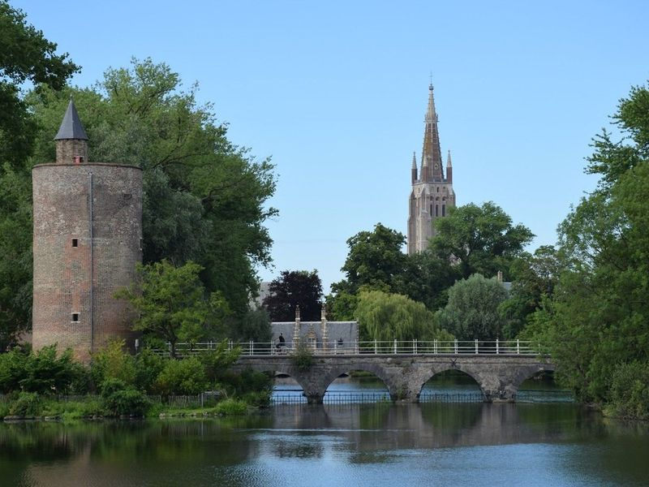
Gunpowder Tower (Poertoren)
Gunpowder Tower (Poertoren) is an impressive 18-meter-tall defensive tower located next to the Lovers' Bridge. Built in 1397/98 as part of a water gate, it later served as a gunpowder workshop and storage. The tower underwent restoration in 1989-1991, resulting in its current height and diameter of over 18 meters and 8 meters respectively, with walls approximately 1.30 meters thick.
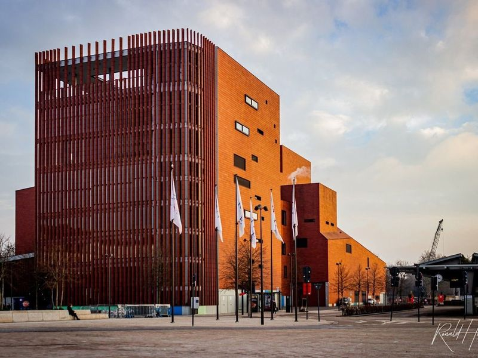
Concertgebouw Brugge
Concertgebouw Brugge is a modern venue with sleek architecture that hosts a variety of events including concerts, dance performances, plays, and art exhibits. The large red concert hall was completed in 2002 during Bruges' time as the European Capital of Culture. Despite its controversial modern design, the venue is known for its high-quality programming.